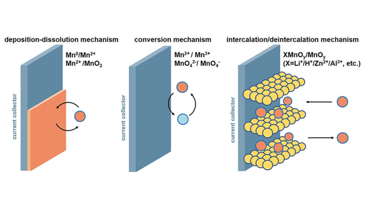
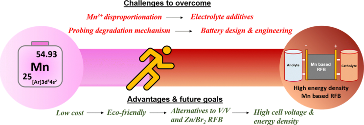

The landscape of battery technology is rapidly evolving, particularly with the emergence of manganese-based batteries. These advancements are not only pivotal for electric vehicles (EVs) but also hold promise for broader applications in energy storage solutions. This newsletter explores the latest developments, advantages, challenges, and future prospects of manganese-based batteries.
Recent Innovations in Manganese-Based Batteries
- Sustainable Lithium-ion Batteries: Researchers have made significant strides in developing lithium-ion batteries using manganese, specifically lithium manganese oxide (LiMnO2), which offers a sustainable alternative to traditional nickel and cobalt-based batteries. This innovation enhances battery performance while addressing issues like voltage decay and manganese dissolution, which have historically plagued manganese-based technologies.
- Improved Energy Density: The new LiMnO2 material has demonstrated an impressive energy density of 820 watt-hours per kilogram (Wh kg−1−1), surpassing the 750 Wh kg−1−1 typically seen in nickel-based materials. This positions manganese-based batteries as competitive options for high-performance applications, particularly in the luxury EV market.
- Lithium Ferrous Phosphate (LFP): Another notable development is the rise of lithium ferrous phosphate batteries, which are gaining traction due to their enhanced energy density and improved low-temperature performance. Companies such as REPT and AVIC Lithium Power are leading efforts to mass-produce these batteries, targeting energy densities of up to 500 Wh/L by 2024.

Advantages of Manganese-Based Batteries
- Cost-Effectiveness: Manganese is abundant and less expensive than nickel and cobalt, making manganese-based batteries a more sustainable option for large-scale production.
- Safety and Stability: These batteries exhibit superior safety characteristics and cycle stability compared to traditional ternary batteries, reducing risks associated with thermal runaway.
- Environmental Impact: The shift towards manganese reduces reliance on materials with significant environmental and ethical concerns tied to their extraction.
Challenges Facing Manganese-Based Batteries
Despite their advantages, manganese-based batteries face several challenges:
- Conductivity Issues: Low conductivity and slow lithium ion diffusion can limit the performance of lithium ferrous phosphate batteries. Research is ongoing to enhance these properties through methods like doping and nanotechnology.
- Manganese Dissolution: Over time, manganese can dissolve due to phase changes or reactions with electrolytes, affecting battery longevity. Strategies such as using concentrated electrolytes and protective coatings are being explored to mitigate this issue.

Future Prospects
The future of manganese-based batteries looks promising as research continues to address existing challenges:
- Next-Generation Materials: Innovations in lithium-rich manganese-based materials (LRMs) are at the forefront of research, offering potential for high capacity and safety. These materials could significantly impact the next generation of lithium-ion batteries, particularly in solid-state designs
- Industrial Scale Production: With ongoing pilot tests and collaborations among leading battery manufacturers, there is a strong push towards commercializing manganese-based technologies. Companies like CATL are already initiating mass production efforts for new battery types that leverage these advancements
Conclusion
Manganese-based batteries represent a significant leap forward in battery technology, combining sustainability with high performance. As research progresses and industry adoption increases, these batteries are set to play a crucial role in the transition towards cleaner energy solutions. The commitment from researchers and manufacturers alike indicates a bright future for manganese as a key player in the evolving landscape of energy storage technology.